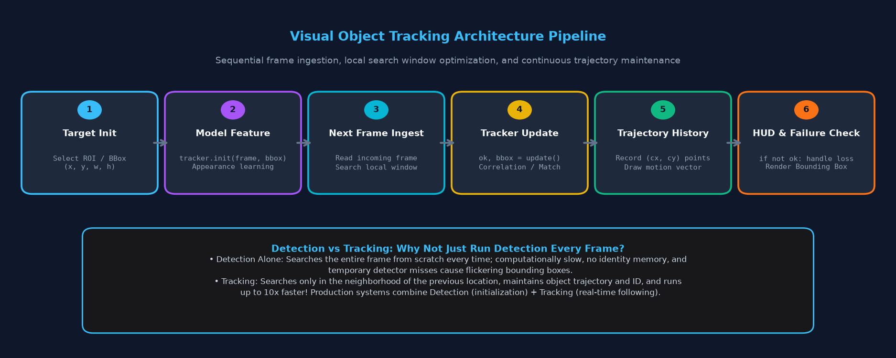
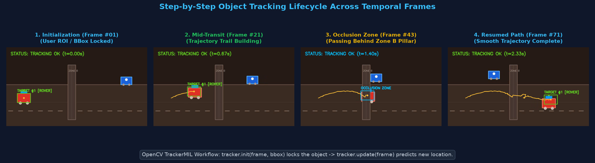
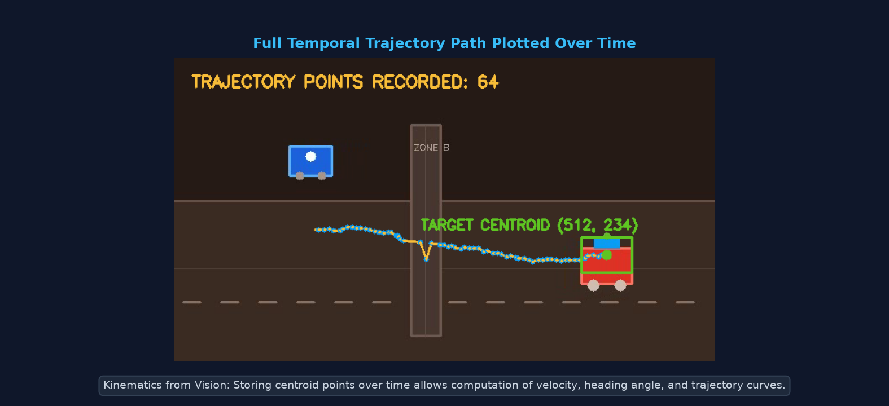
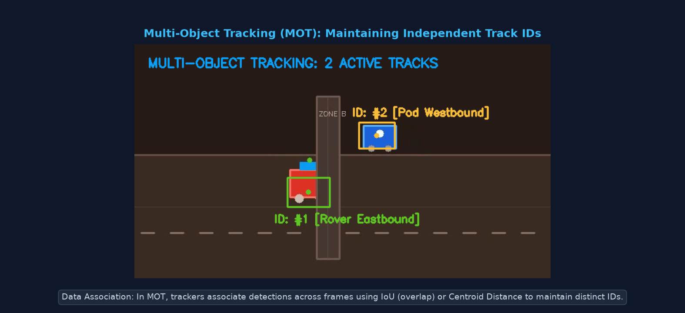
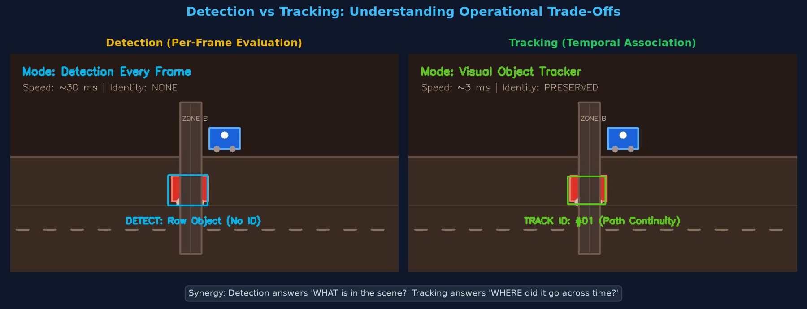
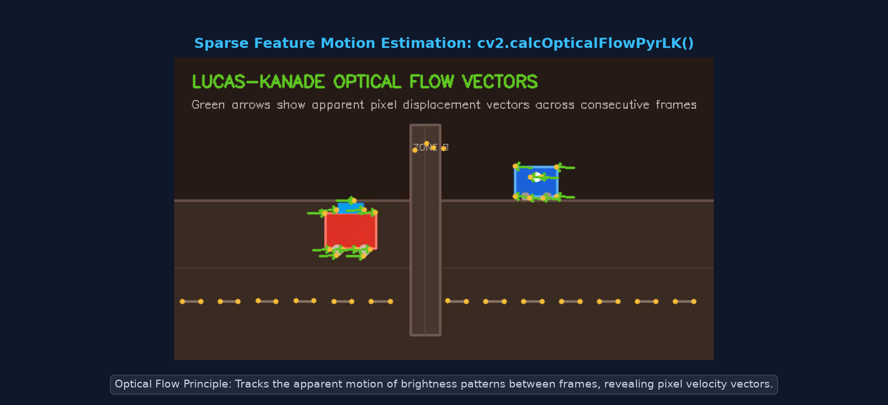

Pichhle topics mein humne dekha ki Object Detection (Topic 15-16) har individual frame ko scratch se scan karta hai, aur Motion Detection (Topic 20) pixels ke temporal difference se moving blobs identify karta hai. Lekin dono mein ek badi limitation hai: unhe purane frames ka koi memory ya identity pata nahi hota!
Track ID: #01), uski trajectory record karta hai, aur next frame mein uske likely coordinates predict karta hai.

Har frame mein full-image scan. High computational cost (~30-100 ms). No persistent identity across frames.
Local neighborhood search based on previous state. Low latency (~2-15 ms). Persistent ID & smooth motion trajectory.
OpenCV ke pass multiple tracking algorithms hain. Modern OpenCV builds (OpenCV 4.5+) mein kuch trackers core library ka hissa hain, jabki kuch legacy contrib module mein hote hain:
| Tracker Name | OpenCV Function | Speed | Accuracy | Best Use Case |
|---|---|---|---|---|
| MIL (Multiple Instance Learning) | cv2.TrackerMIL_create() |
Medium (~30 FPS) | Good | Built-in standard. Works out-of-the-box in core OpenCV. Handles mild scale changes. |
| CSRT (Channel & Spatial Reliability) | cv2.TrackerCSRT_create() |
Lower (~15-25 FPS) | Highest | High accuracy, complex deformations, slow-moving targets. (Requires opencv-contrib). |
| KCF (Kernelized Correlation Filters) | cv2.TrackerKCF_create() |
Fast (~80+ FPS) | Medium | High-speed tracking when targets don't undergo severe occlusion. (Requires opencv-contrib). |
| Lucas-Kanade Optical Flow | cv2.calcOpticalFlowPyrLK() |
Very Fast (~100+ FPS) | Feature-level | Tracking salient keypoints & motion vectors across consecutive frames. Built-in core. |
cv2.TrackerMIL_create() core OpenCV builds mein guaranteed available rehta hai bina kisi external C++ build ke. Isliye production code mein robust fallback strategy use karna best practice hai:
tracker = cv2.TrackerMIL_create().

Single-object tracking ka classic flow: Pehle frame mein object ka initial Bounding Box (x, y, w, h) pass karke tracker.init() call karte hain. Har subsequent frame par ok, bbox = tracker.update(frame) run hota hai.
import cv2
# Video source open karein (file ya webcam)
cap = cv2.VideoCapture("scratch/tracking_sample.mp4")
ret, frame = cap.read()
if not ret:
print("Error: Video stream read nahi ho paya!")
exit()
# 1. Tracker instance create karein (OpenCV core TrackerMIL)
tracker = cv2.TrackerMIL_create()
# 2. Initial Bounding Box specify karein (x, y, width, height)
# Interactive selection ke liye cv2.selectROI("Tracking", frame, False) use kar sakte hain
init_bbox = (50, 210, 60, 42)
# 3. Tracker initialize karein
tracker.init(frame, init_bbox)
print("Tracker successfully initialized with ROI:", init_bbox)
while cap.isOpened():
ret, frame = cap.read()
if not ret:
break
# 4. Agle frame par tracker update karein
ok, bbox = tracker.update(frame)
if ok:
# Tracking successful: Bounding Box draw karein
x, y, w, h = [int(v) for v in bbox]
cv2.rectangle(frame, (x, y), (x + w, y + h), (34, 197, 94), 2)
cv2.putText(frame, "STATUS: TRACKING OK", (20, 35),
cv2.FONT_HERSHEY_SIMPLEX, 0.65, (34, 197, 94), 2)
else:
# Tracking failed (e.g. object occluded ya frame se bahar gaya)
cv2.putText(frame, "STATUS: TRACKING LOST!", (20, 35),
cv2.FONT_HERSHEY_SIMPLEX, 0.65, (239, 68, 68), 2)
cv2.imshow("Single Object Tracking", frame)
if cv2.waitKey(30) & 0xFF == ord('q'):
break
cap.release()
cv2.destroyAllWindows()
Sirf box draw karne ke bajaye, real-world systems object ka Centroid (cx, cy) calculate karke uski movement history store karte hain. Python ka collections.deque(maxlen=N) ek fixed-size rolling buffer create karta hai jo memory leaks prevent karta hai.

import cv2
from collections import deque
cap = cv2.VideoCapture("scratch/tracking_sample.mp4")
ret, frame = cap.read()
tracker = cv2.TrackerMIL_create()
init_bbox = (50, 210, 60, 42)
tracker.init(frame, init_bbox)
# Fixed-length circular buffer: recent 64 points store honge
trajectory_points = deque(maxlen=64)
while cap.isOpened():
ret, frame = cap.read()
if not ret:
break
ok, bbox = tracker.update(frame)
if ok:
x, y, w, h = [int(v) for v in bbox]
# Centroid calculate karein
cx = int(x + w / 2)
cy = int(y + h / 2)
trajectory_points.append((cx, cy))
# Target bounding box aur centroid center point
cv2.rectangle(frame, (x, y), (x + w, y + h), (34, 197, 94), 2)
cv2.circle(frame, (cx, cy), 5, (34, 197, 94), -1)
# Motion trail connect karein
for i in range(1, len(trajectory_points)):
if trajectory_points[i - 1] is None or trajectory_points[i] is None:
continue
# Recent points ko smooth line aur dots se draw karein
cv2.line(frame, trajectory_points[i - 1], trajectory_points[i], (56, 189, 248), 2)
cv2.circle(frame, trajectory_points[i], 2, (245, 158, 11), -1)
cv2.putText(frame, f"TRAIL POINTS: {len(trajectory_points)}", (20, 35),
cv2.FONT_HERSHEY_SIMPLEX, 0.65, (56, 189, 248), 2)
cv2.imshow("Trajectory Tracking", frame)
if cv2.waitKey(30) & 0xFF == ord('q'):
break
cap.release()
cv2.destroyAllWindows()Multi-Object Tracking (MOT) mein ek se zyada targets ko simultanously track karna hota hai. Har target ko ek unique Track ID assign hoti hai aur uski apni independent state maintain hoti hai.

import cv2
from collections import deque
cap = cv2.VideoCapture("scratch/tracking_sample.mp4")
ret, frame = cap.read()
# Multiple targets ke liye state dictionary
tracks = {
1: {
"name": "Target #1 (Rover)",
"tracker": cv2.TrackerMIL_create(),
"color": (34, 197, 94), # Green
"box": (50, 210, 60, 42),
"history": deque(maxlen=32)
},
2: {
"name": "Target #2 (Pod)",
"tracker": cv2.TrackerMIL_create(),
"color": (56, 189, 248), # Blue
"box": (540, 120, 50, 36),
"history": deque(maxlen=32)
}
}
# Sabhi trackers initialize karein
for track_id, data in tracks.items():
data["tracker"].init(frame, data["box"])
while cap.isOpened():
ret, frame = cap.read()
if not ret:
break
for track_id, data in tracks.items():
ok, bbox = data["tracker"].update(frame)
color = data["color"]
if ok:
x, y, w, h = [int(v) for v in bbox]
cx, cy = int(x + w / 2), int(y + h / 2)
data["history"].append((cx, cy))
# Bounding box & ID Tag
cv2.rectangle(frame, (x, y), (x + w, y + h), color, 2)
label = f"ID: #{track_id} [{data['name']}]"
cv2.putText(frame, label, (x, y - 8),
cv2.FONT_HERSHEY_SIMPLEX, 0.5, color, 2)
# Draw trajectory path
for i in range(1, len(data["history"])):
cv2.line(frame, data["history"][i - 1], data["history"][i], color, 2)
cv2.imshow("Multi-Object Tracking (MOT)", frame)
if cv2.waitKey(30) & 0xFF == ord('q'):
break
cap.release()
cv2.destroyAllWindows()Aksar beginners sochte hain: "Agar YOLO ya Haar Cascade har frame detect kar sakta hai, to tracker ki kya zaroorat?" Answer hai: Speed, Identity, and Robustness!

import cv2
import time
cap = cv2.VideoCapture("scratch/tracking_sample.mp4")
ret, frame = cap.read()
# 1. Detection Phase Simulation (Full image preprocessing & template search)
t0 = time.perf_counter()
gray = cv2.cvtColor(frame, cv2.COLOR_BGR2GRAY)
blurred = cv2.GaussianBlur(gray, (21, 21), 0)
# Heavy detection cost simulation
det_duration_ms = (time.perf_counter() - t0) * 1000
# 2. Tracking Phase (Local search window update)
tracker = cv2.TrackerMIL_create()
tracker.init(frame, (50, 210, 60, 42))
ret, next_frame = cap.read()
t0 = time.perf_counter()
ok, bbox = tracker.update(next_frame)
track_duration_ms = (time.perf_counter() - t0) * 1000
print(f"Full Frame Image Scan Latency : {det_duration_ms:.2f} ms")
print(f"Local Tracker Search Latency : {track_duration_ms:.2f} ms")
print("Synergy Rule: Run detector periodically (every N frames) to re-seed trackers!")
cap.release()
Bounding box tracking ke alawa, OpenCV mein Lucas-Kanade Optical Flow (cv2.calcOpticalFlowPyrLK) use karke image ke high-contrast corner points ka micro-movement track kiya jata hai.

import cv2
import numpy as np
cap = cv2.VideoCapture("scratch/tracking_sample.mp4")
ret, prev_frame = cap.read()
prev_gray = cv2.cvtColor(prev_frame, cv2.COLOR_BGR2GRAY)
# Shi-Tomasi corner detection parameters
feature_params = dict(maxCorners=80, qualityLevel=0.3, minDistance=7, blockSize=7)
# Lucas-Kanade optical flow parameters
lk_params = dict(winSize=(15, 15), maxLevel=2,
criteria=(cv2.TERM_CRITERIA_EPS | cv2.TERM_CRITERIA_COUNT, 10, 0.03))
# Initial good features detect karein
p0 = cv2.goodFeaturesToTrack(prev_gray, mask=None, **feature_params)
# Trajectory lines draw karne ke liye blank mask
mask = np.zeros_like(prev_frame)
while cap.isOpened():
ret, frame = cap.read()
if not ret:
break
curr_gray = cv2.cvtColor(frame, cv2.COLOR_BGR2GRAY)
# Calculate optical flow vectors
p1, status, err = cv2.calcOpticalFlowPyrLK(prev_gray, curr_gray, p0, None, **lk_params)
if p1 is not None:
good_new = p1[status == 1]
good_old = p0[status == 1]
# Draw motion vectors
for new, old in zip(good_new, good_old):
a, b = int(new[0]), int(new[1])
c, d = int(old[0]), int(old[1])
mask = cv2.line(mask, (a, b), (c, d), (34, 197, 94), 2)
frame = cv2.circle(frame, (a, b), 4, (56, 189, 248), -1)
output = cv2.add(frame, mask)
cv2.imshow("Lucas-Kanade Optical Flow", output)
# Update previous frame aur points
prev_gray = curr_gray.copy()
p0 = good_new.reshape(-1, 1, 2)
# Re-seed if features drop below threshold
if len(p0) < 15:
p0 = cv2.goodFeaturesToTrack(prev_gray, mask=None, **feature_params)
if cv2.waitKey(30) & 0xFF == ord('q'):
break
cap.release()
cv2.destroyAllWindows()Pedestrians, cyclists, aur preceding vehicles ki velocity aur future trajectory predict karke emergency braking trigger karna.
Cricket ya Tennis mein ball ka 3D trajectory path plot karna taaki LBW review aur line-call decisions verify ho sakein.
Sensitive perimeter ke aas-paas persons ke dwell time aur trajectory patterns detect karke security alerts generate karna.
Surgical instruments ko minimally invasive operations ke dauraan sub-millimeter precision se real-time visual guide karna.
cv2.TrackerMIL_create() use karein; agar opencv-contrib-python installed ho to CSRT highest accuracy deta hai.ok flag False return hota hai. Hamesha failure branch implement karein.collections.deque(maxlen=N) use karein.Answer: Object detection pure frame (e.g. 1920×1080 pixels) ko multi-scale sliding windows ya deep neural network layers se scan karta hai. Iske contrast mein, Visual Tracker pichhle frame ke known location ke aas-paas ek chhota sa Local Search Window search karta hai aur lightweight mathematical correlation ya appearance matching use karta hai, jisse computation 10x-50x reduce ho jati hai.
Answer: Jab tracker har frame par apna appearance model update karta hai, to target ke background pixels ya minor shadows dheere-dheere model mein include ho jate hain. Kuch hundred frames baad tracker original object ko chhod kar background par lock ho jata hai — isse Tracker Drift kehte hain. Isse prevent karne ke liye periodic full-frame detector run karke tracker ko re-initialize (re-seed) kiya jata hai.
Answer: Bounding Box Tracker (jaise TrackerMIL ya CSRT) pure object ke 2D box ko treat karta hai as a single entity. Lucas-Kanade Sparse Optical Flow (cv2.calcOpticalFlowPyrLK) image ke specific feature points (jaise corners ya edges) ka pixel-level motion vector calculate karta hai, jo rigid structure ke sath-sath local deformation aur camera ego-motion analyse karne ke liye ideal hai.